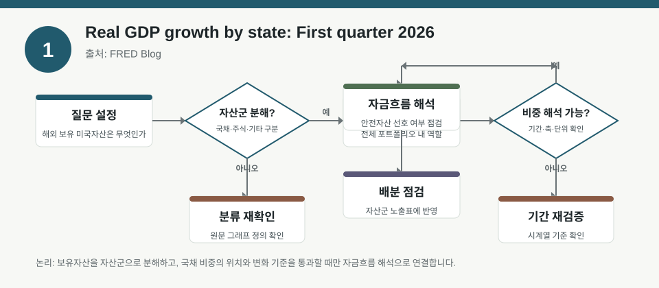
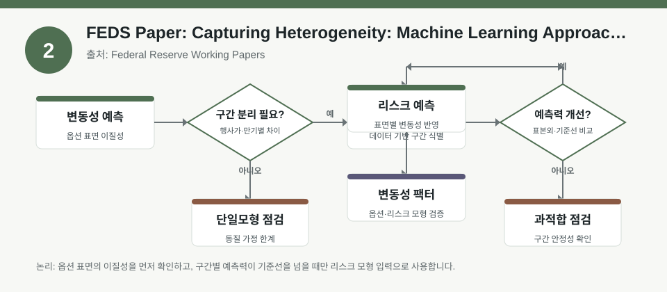
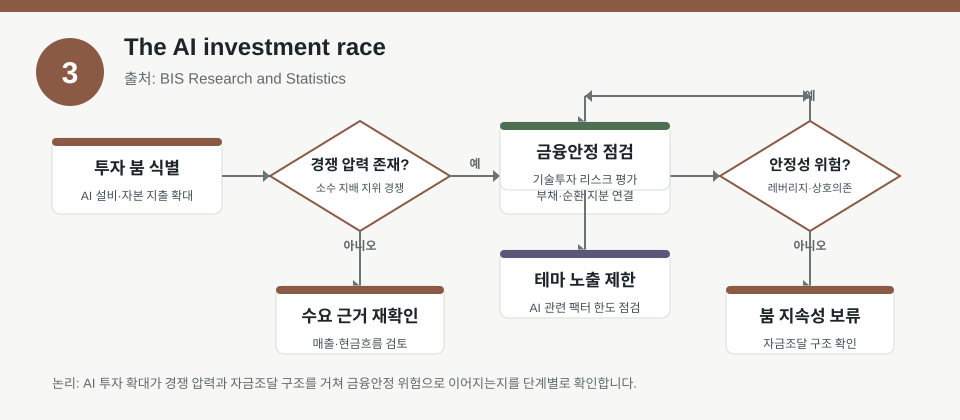

핵심 요약
- 결론: 지역 GDP, 내재변동성 예측, AI 투자 붐을 함께 보며 경기 확산·리스크 모델·테마 과열을 분리 점검
- 원칙: 한국 주식 투자자의 점검 항목으로 정리하되 매수·매도 추천이 아님
주목할 자료
| 번호 | 자료 | 출처 | 원문 | 핵심 내용 | 데이터 포인트 | 리스크/한계 |
|---|---|---|---|---|---|---|
| 1 | Real GDP growth by state: First quarter 2026 | FRED Blog | 원문 보기 | 미국 1분기 실질 GDP 성장률을 주별로 비교해 지역별 경기 확산과 위축 구간을 확인하는 자료 | 주별 성장률, 전분기 대비 연율화 기준, 지역별 색상 지도, 산업 구성 차이를 경기 민감도 점검 변수로 활용 가능 | 수치·맥락 원문 재확인 필요 |
| 2 | FEDS Paper: Capturing Heterogeneity: Machine Learning Approaches to Implied Volatility Forecasting | Federal Reserve Working Papers | 원문 보기 | 옵션 표면의 행사가·만기별 이질성을 머신러닝 분할로 반영해 내재변동성 예측을 개선하려는 연구 | 내재변동성, 옵션 표면, 행사가, 만기, 회귀트리, 표본외 예측력을 변동성 리스크 모델 검증 항목으로 사용 가능 | 수치·맥락 원문 재확인 필요 |
| 3 | The AI investment race | BIS Research and Statistics | 원문 보기 | AI 설비투자 붐이 부채 조달과 순환적 지분 관계를 통해 금융안정 리스크로 이어질 수 있는지 분석한 자료 | AI 투자 경쟁, 과잉투자, 부채 의존도, 순환 지분, 금융안정성을 성장 테마 팩터의 과열 점검 변수로 활용 가능 | 수치·맥락 원문 재확인 필요 |
자료별 상세
1. Real GDP growth by state: First quarter 2026

- 핵심: 미국 1분기 실질 GDP 성장률을 주별로 비교해 지역별 경기 확산과 위축 구간을 확인하는 자료
- 데이터 포인트: 주별 성장률, 전분기 대비 연율화 기준, 지역별 색상 지도, 산업 구성 차이를 경기 민감도 점검 변수로 활용 가능
- 리스크: 수치·기간·표본·방법론은 원문 기준 재확인
- 투자전략 반영 예시: 한국 주식 투자자는 미국 지역 성장 편차를 코스피·코스닥 경기민감 업종의 수출 수요와 환율 민감도 점검 항목으로 반영
- 실행 예시: 코스피 경기민감 업종과 수출 대형주의 수익률을 미국 지역 성장 강도 구간별로 나눠 성과 차이를 사후 비교
2. FEDS Paper: Capturing Heterogeneity: Machine Learning Approaches to Implied Volatility Forecasting

- 핵심: 옵션 표면의 행사가·만기별 이질성을 머신러닝 분할로 반영해 내재변동성 예측을 개선하려는 연구
- 데이터 포인트: 내재변동성, 옵션 표면, 행사가, 만기, 회귀트리, 표본외 예측력을 변동성 리스크 모델 검증 항목으로 사용 가능
- 리스크: 수치·기간·표본·방법론은 원문 기준 재확인
- 투자전략 반영 예시: 한국 주식 투자자는 미국 변동성 구조 변화를 코스피·코스닥 포지션 크기, 손절 폭, 현금 비중 조정 체크리스트로 반영
- 실행 예시: 국내 지수 변동성, 원/달러 환율, 미국 옵션 변동성 지표를 함께 두고 최대낙폭·승률·오탐률 변화를 비교
3. The AI investment race

- 핵심: AI 설비투자 붐이 부채 조달과 순환적 지분 관계를 통해 금융안정 리스크로 이어질 수 있는지 분석한 자료
- 데이터 포인트: AI 투자 경쟁, 과잉투자, 부채 의존도, 순환 지분, 금융안정성을 성장 테마 팩터의 과열 점검 변수로 활용 가능
- 리스크: 수치·기간·표본·방법론은 원문 기준 재확인
- 투자전략 반영 예시: 한국 주식 투자자는 국내 AI·반도체·전력 인프라 테마를 성장 기대와 레버리지 리스크로 분리하고 테마 비중 상한을 기록
- 실행 예시: 국내 AI·반도체 테마 종목군을 매출 성장, 설비투자, 부채 부담으로 나눠 과열 구간의 포트폴리오 기여도를 점검
팩터·리스크·포트폴리오 관점
- 핵심: 코스피·코스닥 섹터 노출, 환율·금리·물가 민감도, 포트폴리오 적용 가능성, 백테스트 한계 분리 확인
- 검수: 수치·기간·표본·가정은 원문 기준 재확인
정리
- 결론: 한국 주식 투자자의 투자 판단을 대신하지 않고 리스크·섹터·환율 체크리스트로 활용
- 다음 확인: 원문 링크 기준 세부 수치와 방법론 검토